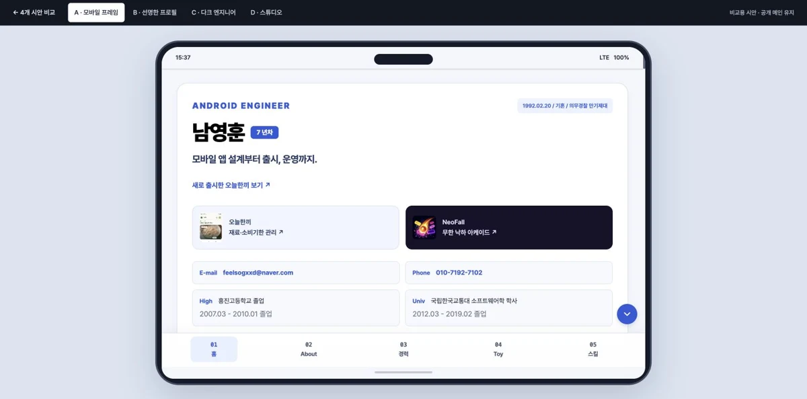
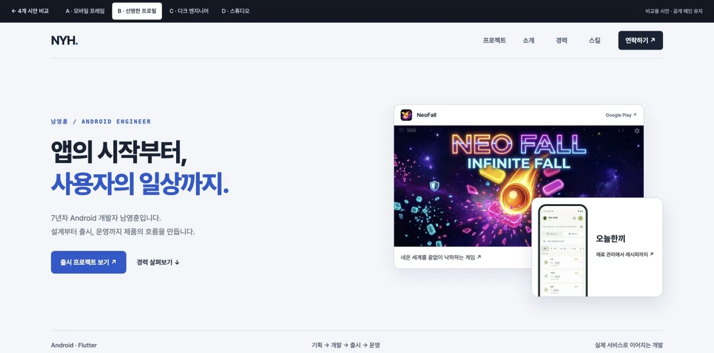
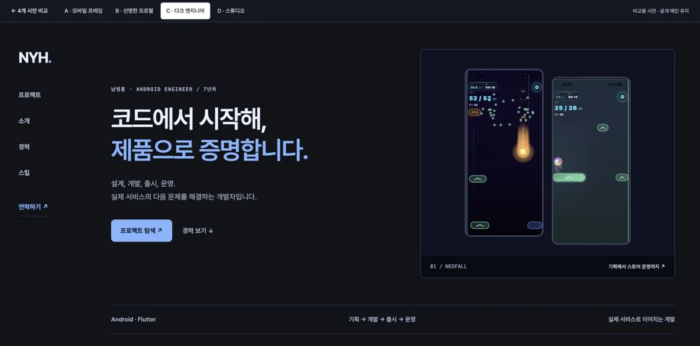
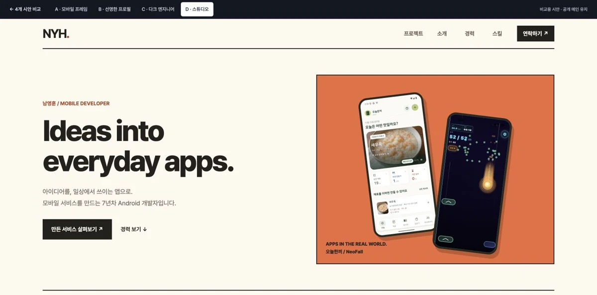

A / 기존 콘셉트 복원시안 열기 ↗
모바일 프레임
휴대폰 껍데기·내부 스크롤·하단 메뉴를 복원하고, 블루 톤과 컴포넌트를 정리했습니다.

B / 현재 디자인 개선시안 열기 ↗
선명한 프로필
블루 포인트와 명확한 카드 경계. 읽기 쉬운 경력 구성과 실제 서비스 이미지를 강조합니다.

C / 새로운 방향시안 열기 ↗
다크 엔지니어
고정 목차, 차분한 다크 배경, 실제 플레이 화면. 개발자의 기술적인 인상을 살립니다.

D / 새로운 방향시안 열기 ↗
메이커 스튜디오
굵은 타이포와 오렌지 비주얼, 단단한 프레임. 직접 만들고 출시하는 메이커의 인상을 줍니다.